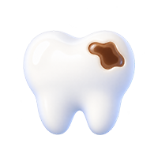
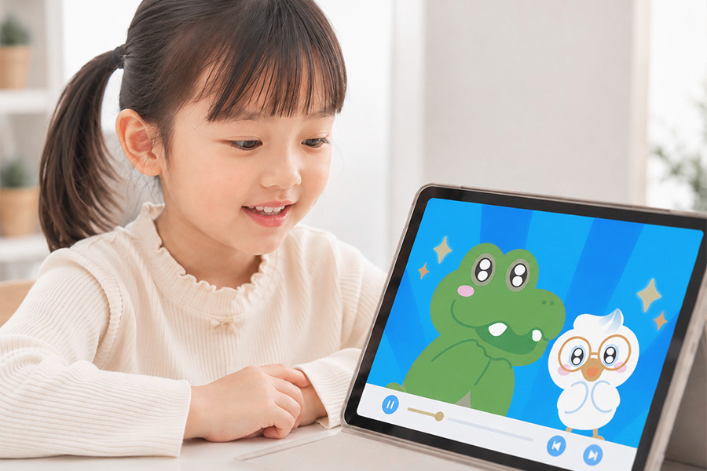
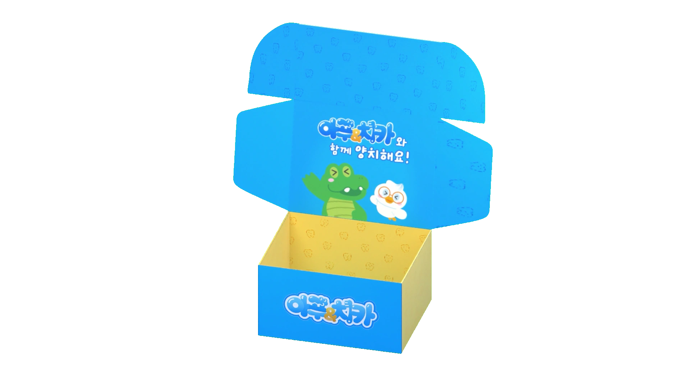
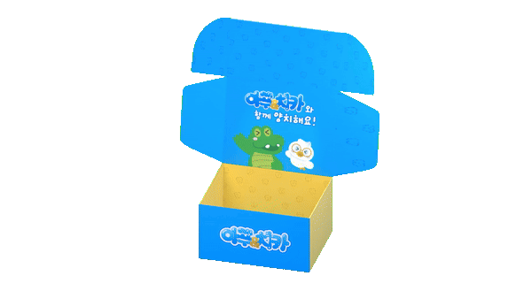
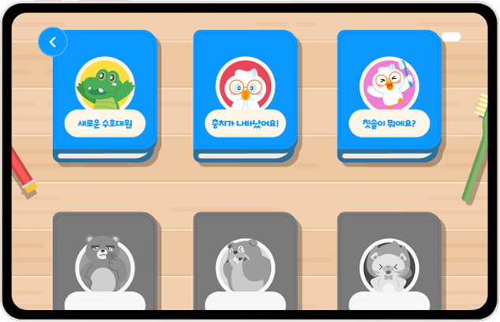
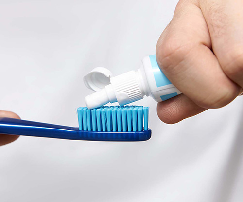
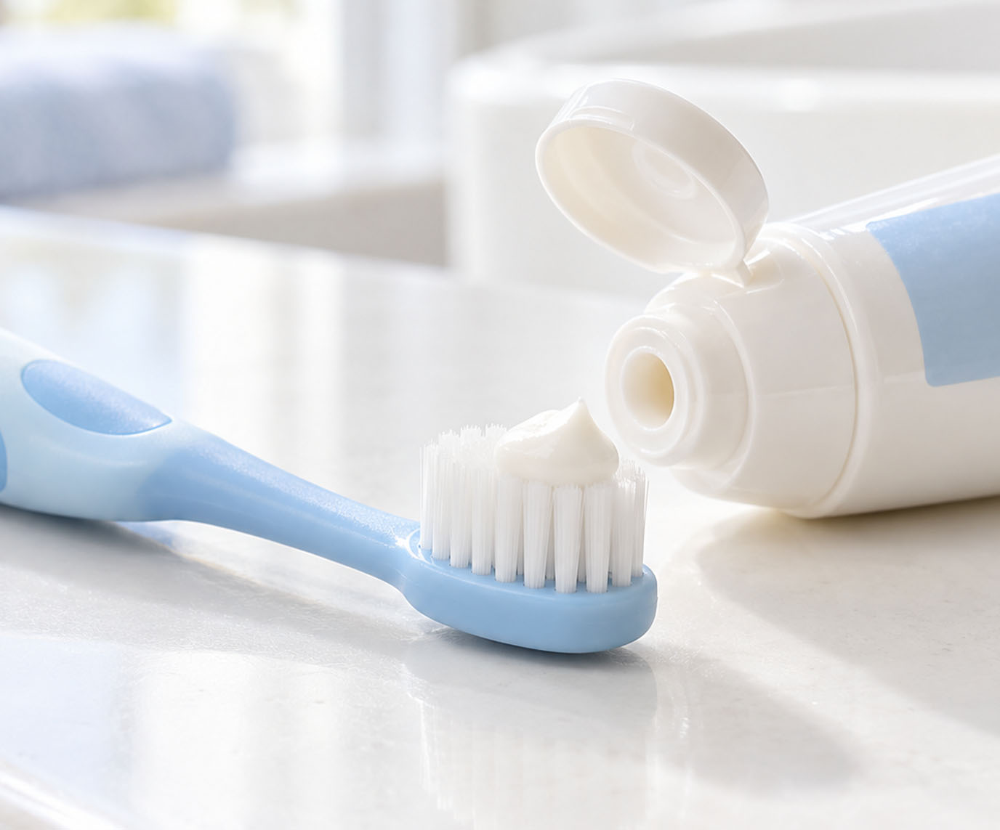

처음 만나는 즐거운 양치질
올바른 구강 관리를 위한 아동 교육 프로젝트
SCROLL DOWN
자녀 유치 관리, 놓치면 어떤 일이 생길까요?
유치는 잠시 쓰는 치아가 아닌 영구치와 구강 발달에 영향을 주는 첫 치아입니다유치는 잠시 쓰는 치아가 아닌 영구치와 구강 발달에
영향을 주는 첫 치아입니다
초기 관리 부족은
영구치 발달에
영향을 끼쳐요
잘못된 양치 습관은
구강 건강을 해쳐요
그래서, 아푸치카가 필요합니다
아푸치카는 양치를 처음 배우는 아이를
위해 애니메이션, 교구, AR 가이드를
하나의 흐름으로
연결한 아동 구강관리 교육 프로젝트입니다애니메이션과 교구, AR 가이드를 연결해올바른 양치 습관을 배우는 구강교육 프로젝트입니다
양치 학습을 행동으로 연결해요
아푸치카는 아이가 양치를 단순히 보는 데서 그치지 않고,
애니메이션과 교구, AR 가이드를 통해 직접 따라할 수 있도록
설계했습니다
아푸치카는 애니메이션과 교구, AR 가이드로직접 따라 하며 올바른 양치를 배우도록 돕습니다

아기 양치 어떻게 하나요?
아기 양치 어려워요
어린이 칫솔은 어떤 걸 쓸까요?
매일 양치로 씨름하는 우리집
아기 양치 어떻게 하나요?
아기 양치 어려워요
어린이 칫솔은 어떤 걸 쓸까요?
매일 양치로 씨름하는 우리집
배움부터 실천까지 담은,
아푸치카 키트


아푸치카를 더 자세히 알아보세요
아푸치카는 애니메이션과 교구를 통해 양치의 필요성을 이해하고, 아이가 스스로 실천할 수 있도록 도와줍니다
양치별의 수호대원이 되어보세요
아푸치카와 함께 수호대원증을 만들어 봐요!
대원증 만들기집에서도 부담 없이 시작하는 아동 양치 교육
아푸치카, 지금 신청해 보세요!

아이가 양치하는 걸 너무 싫어해요
양치 시간은 왜 전쟁일까요
아기 양치 시키는 게 너무 어려워요
아이가 양치하는 걸 너무 싫어해요

양치 시간은 왜 전쟁일까요
아기 양치 시키는 게 너무 어려워요
아이가 양치하는 걸 너무 싫어해요
양치 시간은 왜 전쟁일까요
아기 양치 시키는 게 너무 어려워요

아이가 양치하는 걸 너무 싫어해요
양치 시간은 왜 전쟁일까요
양치만 하면 우는 아이 어떻게 하면 좋을까요?